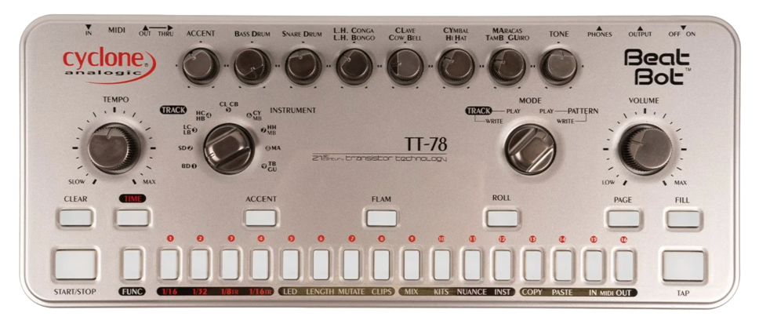

TT-78 Vosyr Volca Sample Pack
Custom sample set captured from the Cyclone Analogic TT-78 (a CR-78 homage) and mapped to Vosyr for the Volca Sample. Expect classic clap, rim, and tom textures, plus your live jams translated to knob-friendly control.
- Full kit of TT-78 voices captured dry + treated.
- Streamlined folders for Volca Sample loading.
- Includes Vosyr scenes for the sample bank and a complementary pattern.